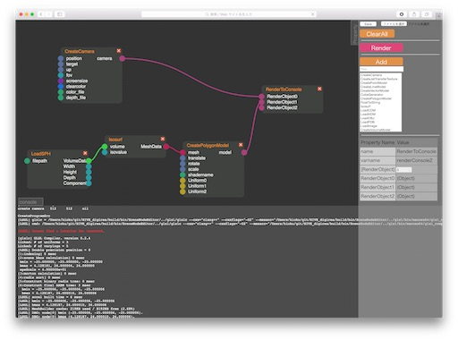
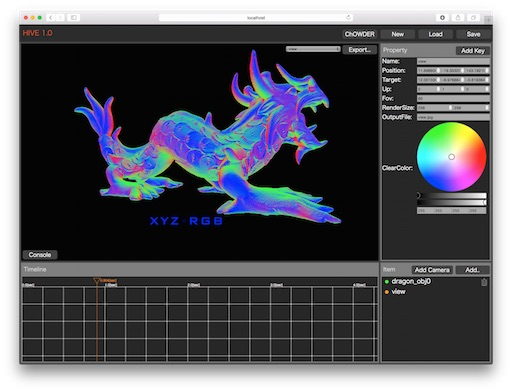
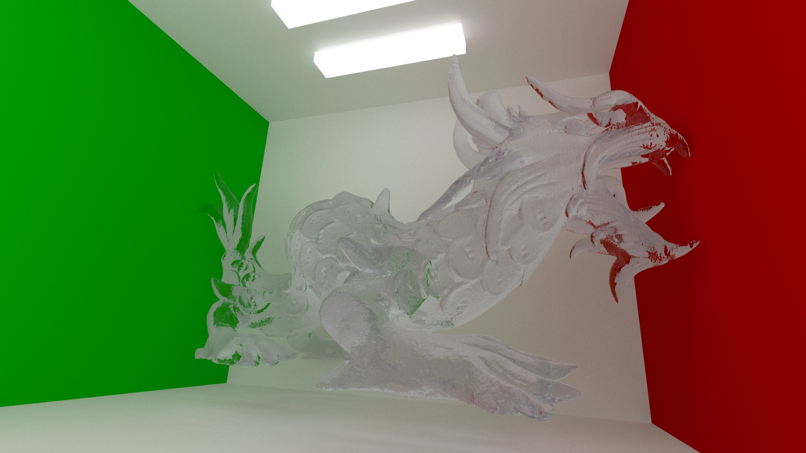
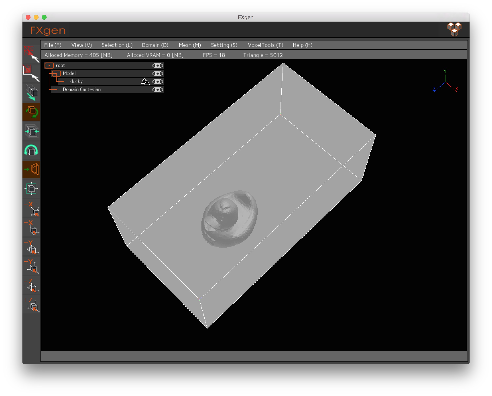

導入事例：理化学研究所 様
HIVE
HIVE（Heterogeneously Integrated Visualanalytic Environment）は、科学技術計算の大規模計算結果の効率的な可視化を支援するオープンソースのシステム環境です。
github: https://github.com/avr-aics-riken/HIVE
HIVEは京コンピュータから、リモートのPCクラスタ環境やLinux, MacOSXなどのスタンドアローン計算機環境で動作する可視化環境です。 HIVEは画像を生成するレンダリング処理部分（C++）は計算機上で動作し、UI部分はWebブラウザ（HTML5+JavaScript）で動作しています。 この仕組みにより、画像生成部は高速に動作し、UIは容易にカスタマイズが可能な柔軟な仕組みを実現しています。
 
HIVEのレンダラではSURFACEと呼ばれるOpenGLES2.0をベースとしたレイトレーシングライブラリを利用しており、OpenGLとレイトレーシングを相互に切り替えてのレンダリングに対応しています。 これにより、京コンピュータなどのGPUがない環境でも動作し、GPUがある環境では高速なレンダリング可能です。 またSURFACEは、GLSLを拡張しており、GLSLによる柔軟なレイトレーシングにより、高品質な画像の生成が可能となっています。
HIVEは、科学技術計算可視化向けの可視化環境ではありますが、一般的な形状モデルフォーマット（STLやOBJ）もサポートしており、マルチプラットフォーム対応の汎用レンダリングソフトウェアとしても利用可能です。

パストレーシングシェーダによるHIVEでのレンダリング例HIVEはボリュームデータのレンダリングにも特化しており、CAE（Computer Aided Enginee）と呼ばれるものづくりの現場で、実際の風洞実験の代わりに、計算機による数値シミュレーションを行った際の可視化にも使われます。
ここでは計算工学ナビのサイトで公開されている、以下の再現実行対応事例の数値計算結果をHIVEにて可視化した例を示します。事例ではアヒルの形状データですが、本来のものづくりの環境では車、プロペラや風車など様々な形状データの解析が行われています。
計算工学ナビ 複雑形状周りの流れ解析（要ログイン）: http://www.cenav.org/kdb/?p=2051

（見やすいようにスケールしたものを表示してあります）